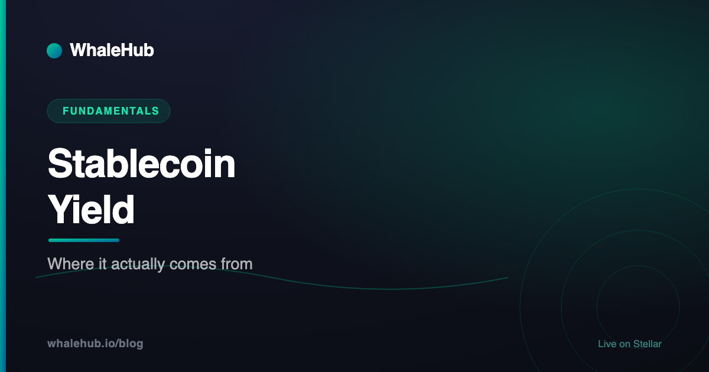

Stablecoin Yield: Where It Actually Comes From

A dollar-denominated token paying double-digit returns is either doing something clever or doing something unsustainable, and the difference is knowable in advance. Every yield is someone else's cost. Trace who is paying and why, and a confusing menu of rates resolves into a small number of well-understood mechanisms — each with its own risk and its own shelf life. This guide walks through all of them.
The one principle that explains everything
Yield is always someone paying for the use of your capital. If you can name who pays, what they get in return, and why they would keep paying, you understand the yield. If you cannot, you do not have an investment thesis — you have a hope.
This sounds obvious and yet it is the single most useful filter in DeFi. Money does not appear from a smart contract. When a protocol offers you 8% on a dollar-denominated deposit, that 8% is coming out of somebody's pocket — a borrower, a trader, a token treasury, a government bond issuer, or a derivatives counterparty. There is no sixth option.
So the first question is never "how much?" It is "who pays, and why?" The size of the number tells you almost nothing on its own. The identity of the payer tells you nearly everything: how durable the yield is, what could stop it, and what risk you're being compensated for.
- Who is paying? Borrower, trader, protocol treasury, bond issuer, or derivatives counterparty.
- What do they get? Leverage, liquidity, attention, capital, or a hedge.
- Why keep paying? If the answer is "to bootstrap growth," there's an end date.
- What breaks it? Every source has a specific failure mode. Name it before depositing.
The five real sources of yield
Stablecoin yield comes from borrowers paying lending interest, traders paying swap fees, protocols emitting their own tokens as incentives, interest earned on real-world assets such as short-term government debt, and funding payments from hedged derivatives positions. Nearly every product in the market is one of these five, or a package of several.
1 — Lending interest
You supply stablecoins to a money market; borrowers post collateral and pay interest to take them out. This is the most legible source in DeFi: the payer is a leveraged trader or someone who needs liquidity without selling their holdings, and the rate moves with how badly they want it. Blend fills this role on Stellar. Failure mode: bad debt if collateral falls faster than liquidations can clear it, plus oracle and contract risk.
2 — Market-making fees
You supply stablecoins to an AMM pool and earn a cut of every swap routed through it. The payer is any trader who wants to exchange one asset for another right now. Stable-to-stable pools are especially attractive here because two assets that both track a dollar barely diverge, so impermanent loss stays negligible while fees still accrue. Failure mode: one of the "stable" assets stops being stable, at which point the pool ends up holding the broken one.
3 — Protocol incentives
A protocol emits its own token to whoever deposits, in order to bootstrap liquidity. The payer is the protocol's treasury, and what it buys is growth and attention. This is the source behind most eye-catching headline rates. It is not illegitimate — paying for early liquidity is a rational strategy — but it is marketing spend, and marketing spend has a budget. Failure mode: emissions taper, the reward token falls, or both at once.
4 — Real-world asset interest
The stablecoin issuer or a tokenised-fund protocol holds short-term government debt or similar instruments and passes some of the interest through. The payer is, ultimately, a government paying on its bonds. This is the most boring source and the most durable one — it tracks prevailing short-term rates and doesn't depend on crypto activity at all. Failure mode: counterparty and custody risk on the off-chain assets, plus regulatory exposure, since a yield-bearing dollar instrument attracts scrutiny in most jurisdictions.
5 — Basis and funding
A strategy holds a spot asset and shorts its perpetual future, collecting the funding payments that longs pay shorts when the market is bullish. The payer is a leveraged long trader. This can produce strong returns for extended periods. Failure mode: funding can turn negative, exchange or custody failure can break the hedge, and the strategy needs active management — a "delta-neutral" position is only neutral while someone is maintaining it.
Sustainable vs. countdown-timer yield
Yield paid by borrowers, traders, or bond issuers can persist as long as that demand persists. Yield paid by a protocol printing its own token is a budget with an end date, and it typically falls sharply as more capital arrives to share it. The practical test is whether the payer receives something they actually need.
Sorting the five sources by durability produces a clear picture:
| Source | Who pays | Durability | Main risk |
|---|---|---|---|
| Real-world asset interest | Bond issuers | High — tracks prevailing rates | Custody, counterparty, regulation |
| Lending interest | Borrowers | High while leverage demand exists | Bad debt, oracle failure, contracts |
| Market-making fees | Traders | Moderate — tracks trading volume | A "stable" asset breaking; contracts |
| Basis / funding | Leveraged longs | Moderate — cyclical, can invert | Negative funding, venue failure |
| Protocol incentives | A token treasury | Low — by design temporary | Emissions ending, token price falling |
A useful sanity check: compare any stablecoin yield to the return on short-term government debt. That's roughly the risk-free rate in dollars. Whatever sits above it is compensation for a specific risk you are taking, and you should be able to say what that risk is in one sentence. A few points above is a plausible premium for smart-contract and counterparty exposure. A rate several times higher is telling you something loud, and it is worth hearing it before rather than after.
What "stable" doesn't protect you from
A stable price removes volatility, not risk. You remain exposed to the issuer's solvency and redemption process, to smart-contract failure in whatever protocol holds the funds, to the borrower or counterparty on the other side of the yield, to liquidity drying up when you want out, and to the rate simply ending.
The psychological trap is real: a position denominated in dollars feels safe in a way an equivalent position in a volatile token does not, even when the actual risk of loss is similar. Stack the risks explicitly:
- Issuer risk. A fiat-backed stablecoin is a claim on a company. Its value depends on that company holding real reserves and honouring redemptions. Different issuers publish very different levels of attestation — this is worth checking rather than assuming.
- Contract risk. Your funds sit in code. Audits reduce the chance of a flaw; they don't eliminate it. Every additional protocol in a strategy adds another independent chance of failure.
- Counterparty risk. Someone is on the other side of the yield. If they can't pay — an underwater borrower, a failed venue, a broken hedge — you find out only when it matters.
- Liquidity risk. Being able to withdraw depends on the pool having funds available. High utilisation in a lending market means withdrawals can queue exactly when everyone wants out.
- Rate risk. Nearly all DeFi rates are variable. The yield that justified the position can be a fraction of itself next month.
- Regulatory risk. Yield-bearing dollar products attract regulatory attention. Rules on stablecoins continue to develop across major jurisdictions — our overview of MiCA and stablecoins covers the European picture.
Why the rate drops after you deposit
Most DeFi yields are shared among everyone in the pool. If rewards are a fixed amount per day, doubling the pool's capital roughly halves each depositor's rate. High advertised yields attract capital, and that capital dilutes the yield — so the rate you see before depositing is frequently higher than the rate you end up earning.
This is not deception; it's arithmetic that dashboards rarely spell out. A pool distributing a fixed daily emission divides it among all deposits. Your share is your fraction of the pool. When a headline rate goes viral, capital floods in and everyone's fraction shrinks.
Two habits follow. First, look at the rate's history, not its current value — a yield that has been steady for months is telling you something a yield that spiked yesterday is not. Second, understand which quoted number you're reading: an APR and an APY describe the same underlying rate very differently, and comparing one against the other is a common and expensive error. Our guide to APY vs APR covers the conversion.
Stablecoin yield on Stellar
Stellar supports major stablecoins including Circle's native USDC and EURC, and its DeFi layer offers the standard routes to yield: supplying to lending pools on protocols such as Blend, and providing liquidity to AMM pools on Aquarius, which can also earn AQUA emissions. Rates are variable and carry the usual smart-contract and counterparty risks.
Stellar has two structural advantages worth naming for this particular use case. Transaction fees are extremely low, which matters enormously for stablecoin strategies — when your expected return is measured in single-digit percentages, the cost of moving, claiming, and compounding is a meaningful fraction of it. On expensive chains, small stablecoin positions are simply uneconomical to manage actively. And native issuance means assets like USDC exist as first-class Stellar assets rather than as bridged wrappers, which removes an entire category of bridge risk.
The available routes map onto the sources above:
- Lending — supply stablecoins to a money market and earn borrower interest. See our Blend guide for how isolated pools and backstops work.
- Liquidity provision — supply to Aquarius pools and earn swap fees, plus AQUA emissions where a pool is receiving them. Stable-to-stable pairs minimise divergence.
- Which stablecoins — our guide to stablecoins on Stellar covers USDC, EURC, PYUSD, and how trustlines work for each.
One honest note about AQUA emissions specifically: which pools receive them is decided by ICE voting and by whether a pool is whitelisted for rewards at a given time, both of which change. A pool earning emissions today may not be earning them next month. Our ICE voting guide explains that mechanism, and it's the reason emission-driven rates belong firmly in the "temporary" row of the durability table above.
WhaleHub itself isn't a stablecoin product — it's a yield optimiser for the AQUA ecosystem, where you stake AQUA and receive BLUB, a liquid receipt token whose value floats with the market. We mention it here only for completeness about where it sits: it optimises an incentive-driven yield, which by the framework above means variable rewards, not a bond-like rate.
A five-question checklist
Before depositing, establish who pays the yield, what the rate looks like over months rather than today, how many protocols your funds pass through, what the exit path is under stress, and how the rate compares to short-term government debt.
- Who pays, and why would they continue? If the honest answer is "a token treasury bootstrapping growth," size the position for a rate that ends.
- What does the rate look like over six months? Today's number is the least informative data point available.
- How many contracts deep is this? A vault that deposits into a protocol that deposits into another multiplies your failure points. Count them.
- How do I get out on a bad day? Not on a calm day — a bad one, when utilisation is high and everyone else is leaving too.
- What's the spread over the risk-free rate? Name the risk that spread is paying you for. If you can't, that's the finding.
Stablecoin yield isn't magic and it isn't a scam — it's a set of five well-understood mechanisms with different payers, different durability, and different ways of breaking. The work is tracing any given rate back to its source. Do that consistently and you'll pass on the yields that are quietly counting down, and hold the ones that are being paid by someone with a durable reason to pay.
Frequently asked questions
Where does stablecoin yield come from?
From someone paying to use your capital. The main sources are borrowers paying interest on lending protocols, traders paying fees to swap against liquidity you supplied, protocols emitting their own tokens to attract deposits, interest earned on real-world assets such as short-term government debt, and funding payments from hedged derivatives positions. If a yield cannot be traced to one of these, that is a warning sign.
Is stablecoin yield safe?
No yield is risk-free, and a stable price does not mean a stable position. You are exposed to the stablecoin issuer's solvency and redemption process, to smart-contract failure in whatever protocol holds your funds, to the borrower or counterparty on the other side, and to the yield itself falling or ending. Stablecoins remove price volatility, not risk.
How can you tell if a stablecoin yield is sustainable?
Ask who is paying and why they would keep paying. Yield funded by borrowers, traders, or interest on real assets can persist as long as that demand persists. Yield funded by a protocol printing its own token is a marketing budget with an end date, and it usually falls sharply as more capital arrives to share it. Compare the rate to short-term government debt: a large gap is compensation for a risk you should be able to name.
Why do stablecoin yields drop after you deposit?
Most DeFi yields are shared among everyone in the pool. If rewards are a fixed amount per day, doubling the capital in the pool roughly halves each depositor's rate. High advertised yields attract capital, and that capital dilutes the yield — so the rate you see before depositing is frequently higher than the rate you end up earning.
Can you earn yield on stablecoins on Stellar?
Yes. Stellar supports stablecoins including Circle's native USDC and EURC, and its DeFi layer offers the usual routes: supplying to lending pools on protocols such as Blend, and providing liquidity to AMM pools on Aquarius, which can also earn AQUA emissions. As anywhere else, the rates are variable and carry smart-contract and counterparty risk.
WhaleHub is a yield-optimization protocol on Stellar. We stake AQUA, aggregate ICE voting power, and auto-compound Aquarius rewards for stakers. This series explains the Stellar DeFi stack — protocols, tokens, and strategies — in plain English.
Read more


Know where your yield comes from
WhaleHub optimises Aquarius rewards on Stellar — stake AQUA, receive BLUB, and let the protocol compound for you.
Launch the appThis article is for educational and informational purposes only and is general information, not financial, investment, or tax advice. It describes categories of yield mechanism generically and is not a recommendation of any specific product, protocol, issuer, or rate. Third-party protocols mentioned are not operated by WhaleHub. All DeFi rates are variable and can fall to zero, and DeFi involves significant risk including smart-contract failure, counterparty default, and the potential total loss of capital — including in dollar-denominated positions. Do your own research and consult a qualified professional before making decisions.